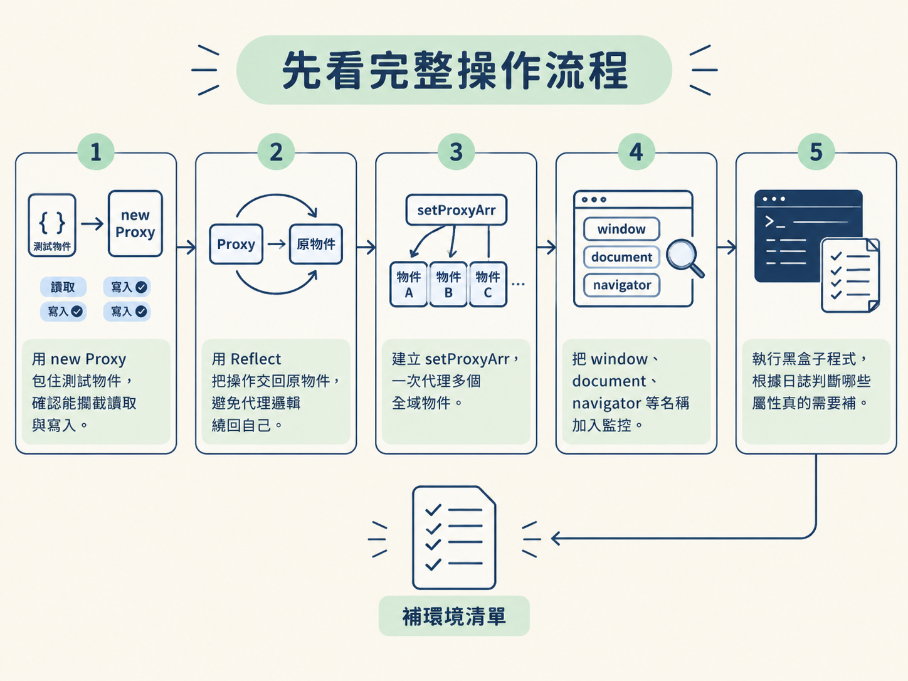
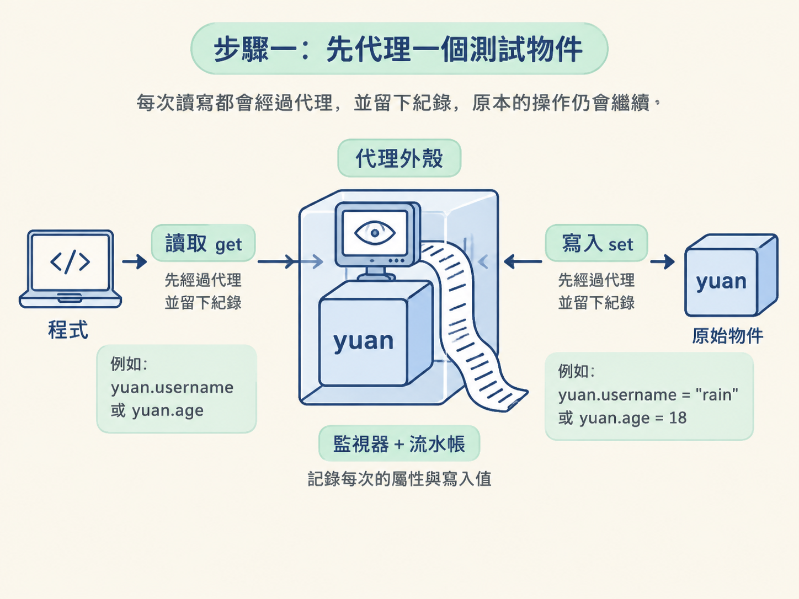
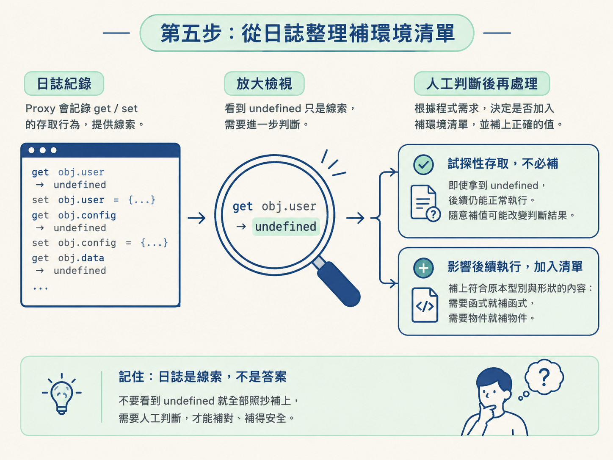

在「抓取 → 反爬 → 逆向」的流程裡，當瀏覽器裡的 JavaScript 被搬到 Node 執行，常會因為缺少 window、document 或 navigator 等瀏覽器物件而失敗。
這一節不打算靠人工讀完幾萬行、甚至已經混淆過的程式碼。你會改用 Proxy 監控物件的讀寫，讓黑盒子程式在執行時，自己留下「用過哪些物件與屬性」的紀錄。
完成後，你會得到一份可檢查的日誌，並從中整理出需要補進 Node 環境的屬性清單。
動手前請先確認：你已經理解 obj.prop 與 obj.prop = value 這兩種物件屬性操作。Proxy 的基本觀念已在「Hook 與 Proxy 攔截」節點介紹過，這裡會直接拿來實作。
new Proxy 包住一個測試物件，確認能攔截讀取與寫入。Reflect 把操作交回原物件，避免代理邏輯繞回自己。setProxyArr，一次代理多個全域物件。window、document、navigator 等名稱加入監控。
先不要急著處理整套瀏覽器環境。從一個簡單的 yuan 物件開始，確認攔截機制確實會工作。
下面的程式用 new Proxy 包住原物件。其中，get 負責攔截讀取，set 負責攔截寫入：
var yuan = {
username: "yuan",
age: 22,
wx: "u82d1660a",
foo:function () {
console.log("foo")
}
}
…
yuan = new Proxy(yuan, {
get(target, p, receiver) {
console.log(target, "查询了属性", p)
// return window['username'];/// 这里如果这样写. 有递归风险的...
// return Reflect.get(...arguments);
return Reflect.get(target, p);
},
set(target, p, value, receiver) {
console.log(target, "设置了属性", p, "值为：", value)
Reflect.set(target, p, value);
}
});
yuan.username;
yuan.age;
yuan.username = "rain"
yuan.age = 18
yuan.foo()
…執行後，逐一對照程式與輸出。當程式讀取 yuan.username 或 yuan.age，就會進入 get，並印出被查詢的屬性。
當程式執行 yuan.username = "rain" 或 yuan.age = 18，則會進入 set，記下屬性名稱與寫入值。
這層代理就像替物件裝上一台監視器。原本的讀寫仍會繼續，只是每次操作都多留下一筆流水帳。

get 與 set 會收到幾個重要參數：
target：被代理的原物件。p：這次存取的屬性名稱。value：寫入屬性的新值，只會出現在 set。receiver：代理後接收這次操作的物件。日誌記完之後，操作仍要交回原物件。因此範例分別使用 Reflect.get(target, p) 與 Reflect.set(target, p, value)，讓原本的讀寫繼續完成。
注意遞迴風險：不要在
get裡再次讀取同一個代理物件。這會重新觸發get，像走進一扇會把人送回原地的旋轉門，不斷繞圈。
原始碼中被註解的 return window['username']，正是在提醒這個問題。若 window 已經是代理物件，在 get 裡再次讀取它，就可能反覆觸發同一段攔截邏輯。
Reflect.get(target, p) 直接從背後的原物件 target 取值，不會再繞回代理，因此較安全。
單一物件測試成功後，下一步才是補環境真正需要的做法。
這時要監控的通常不只有一個物件，而是 window、document、navigator 等多個名稱。若每個物件都手寫一次 new Proxy，程式會變得又長又重複。
因此，我們建立 setProxyArr，讓它接收一串物件名稱，再逐一掛上代理：
function setProxyArr(proxyObjArr) {
for (let i = 0; i < proxyObjArr.length; i++) {
const objName = proxyObjArr[i];
const handler = {
get(target, property, receiver) {
console.log("方法:", "get", "对象:", objName, "属性:", property, "属性类型：", typeof property, "属性值：", target[property], "属性值类型：", typeof target[property]);
return target[property];
},
set(target, property, value, receiver) {
console.log("方法:", "set", "对象:", objName, "属性:", property, "属性类型：", typeof property, "属性值：", value, "属性值类型：", typeof target[property]);
return Reflect.set(target, property, value, receiver);
}
};
// 检查并初始化对象
let targetObject = global[objName] || {}; // 在 Node.js 环境中使用 global
global[objName] = new Proxy(targetObject, handler); // 在 Node.js 中使用 global
}
}按照執行順序拆開來看：
proxyObjArr 是要監控的物件名稱陣列。objName 代表目前這一輪正在處理的名稱，例如 "window"。handler 裡的 get 與 set 會記錄物件名稱、屬性名稱、值與型別。global[objName] || {} 會先檢查 Node 全域中是否已有該物件。若有就沿用，若沒有就先建立空物件。new Proxy(targetObject, handler) 包住它，再放回 Node 的全域範圍。如此一來，後續程式只要存取這些全域名稱，拿到的就是已經裝好監控的代理物件。日誌也不只會告訴你「某個屬性被讀了」，還能指出「哪個物件的哪個屬性被讀了」。
這段 get 使用的是 return target[property]，而不是 Reflect.get。這裡仍然可以正常運作，因為 target 是原物件，不是代理本身，直接讀取不會重新觸發同一個 get。
函式準備好後，傳入要監控的物件名稱即可。先從最常見的三個名稱開始：
setProxyArr(["window", "document", "navigator"])執行後，window、document 與 navigator 都會被換成掛好代理的版本。
先用自己的簡單測試程式讀寫幾個屬性，確認終端機確實出現日誌。確認監控正常後，再執行真正要分析的黑盒子加密程式碼。這樣如果沒有輸出，也比較容易判斷是代理沒有裝好，還是程式根本沒有走到那條路徑。
代理裝好後，讓黑盒子程式照常執行。終端機會陸續顯示它讀寫了哪個物件、哪個屬性，以及當下的值與型別。
如果某個被讀取的屬性值是 undefined，代表目前物件上沒有可用的值。先把這些紀錄圈出來，作為補環境的候選清單。
不要看到
undefined就全部補上。先確認程式後續是否真的依賴這個屬性，再決定要不要處理。
有些程式只是試探性讀取某個屬性。即使拿到 undefined，後續仍能正常執行。這種情況通常不必補；若隨意塞入錯誤的值，反而可能改變原本的判斷結果。
若程式確實需要該屬性，就要補成符合原本型別與形狀的內容。需要函式時就補函式，需要物件時就補物件，而不是所有缺口都塞入同一種空值。
換句話說，Proxy 日誌提供的是「線索」，不是可以不經判斷就照抄的答案。

當程式碼龐大、經過混淆，或你無法快速從靜態程式碼判斷它用了哪些瀏覽器物件時，Proxy 很適合拿來動態記錄實際發生的存取。
如果只是少量、清楚可見的屬性缺失，直接根據錯誤訊息補上可能更快。若某個屬性只存在於沒有被執行到的分支，這次日誌也不會出現它；Proxy 記錄的是實際走過的路，不是整份程式所有可能的路徑。
完成這些步驟後，終端機應該會出現一連串類似「物件：window／屬性：screenX／屬性值：undefined」的紀錄。
你也應該能把紀錄分成兩類：一類只是試探性存取，不需要處理；另一類會影響程式後續執行，必須加入補環境清單。
Proxy 為什麼能攔截操作，以及 Reflect 背後的運作原理，已經在「Hook 與 Proxy 攔截」節點說明過。這一節的重點是把它們當成工具，用來找出黑盒子程式實際需要的環境。
現在你已經知道「缺哪些屬性」。下一節要處理的是「這些屬性該補成什麼樣子」：我們會整理補環境常用的八大前端物件，以及經常被拿來檢查的 toString 標籤。